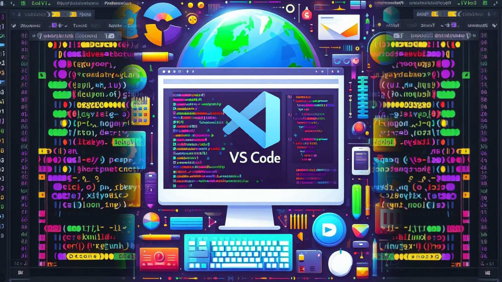

از VS Code تا GitHub
۵ ابزاری که سرعت و کیفیت توسعه من را چند برابر کرد!
در دنیای مهندسی نرمافزار یک قانون طلایی وجود دارد: یک توسعهدهنده به اندازه ابزارهایی که بر آنها مسلط است، چابک و دقیق عمل میکند. وقتی تازه وارد دنیای برنامهنویسی میشوید، شاید تفاوت زیادی بین ادیتورها یا ابزارهای مدیریت پایگاه داده حس نکنید. اما وقتی پروژهها بزرگتر میشوند و وارد رقابتهای پرفشار و سطح بالای جهانی مثل مسابقات آمریکا یا سوئیس میشوید، متوجه میشوید که ابزارهای مناسب فقط برای راحتی کار نیستند؛ آنها جلوی فاجعههای فنی را میگیرند و بهرهوری تیم را چند برابر میکنند. در این مقاله، جعبهابزار اصلی خودم را که در تمام پروژههای بینالمللی همراه من بوده است، بررسی میکنم: ۱. ویژوال استودیو کد (Visual Studio Code): استودیوی فرماندهی VS Code چیزی فراتر از یک ویرایشگر متن ساده است؛ یک اکوسیستم کامل برای توسعه است. چرا انتخاب اول من است؟ اکستنشنهای قدرتمند، دیباگر داخلی دقیق و یکپارچگی عمیق با ترمینال. با شخصیسازی کلیدهای میانبر (Shortcuts) و استفاده از پلاگینهای بررسی فرمت کد (مثل Prettier و ESLint)، ساعتها در طول هفته در زمان تایپ و خطایابی صرفهجویی میکنم. ۲. گیت و گیتهاب (Git & GitHub): ماشین زمان و بیمه پروژه اگر از من بپرسید مهمترین مهارتی که هر برنامهنویس باید قبل از شروع پروژه گروهی یاد بگیرد چیست، بدون شک میگویم Git. در پروژه بینالمللی SkyGate، بارها پیش آمد که برای آزمودن ایدههای جدید مجبور به ایجاد Branchهای موازی شدیم. با گیت، هیچ ترسی از شکستن کدهای قبلی نداشتیم. استفاده از GitHub به ما این امکان را داد که پیش از ترکیب کدها (Merge)، جلسات کوتاه Code Review برگزار کنیم؛ جایی که هر خط کد بررسی میشد تا خطایی به محیط اصلی وارد نشود. ۳. فیگما (Figma): طراحی قبل از اولین خط کد کدنویسی بدون داشتن تصویر واضح از خروجی، مثل ساختن خانه بدون نقشه است. تمام پروتوتایپها، تایپوگرافی، پالتهای رنگی و چیدمانهای واکنشگرا (Responsive) را ابتدا در Figma پیادهسازی میکنم. با این رویکرد، وقتی ادیتور را باز میکنم، دقیقاً میدانم کدام Grid، کدام Padding و کدام Transition باید اعمال شود؛ این یعنی به صفر رساندن دوبارهکاریها در فرانتاند. ۴. دیبیور (DBeaver): مدیریت بدون دردسر پایگاه داده پایگاه داده قلب هر برنامه کاربردی است و کنترل آن نباید پیچیده یا مبهم باشد. DBeaver به عنوان یک کلاینت جامع، دید بسیار شفافی از جداول، روابط (ER Diagrams) و تراکنشها به من میدهد. بررسی و بهینهسازی سریع Queryها در این ابزار به ما کمک کرد در پروژههای مالی و پرتابلهای سنگین، بدون افت سرعت دادهها را با کمترین Latency واکشی کنیم. ۵. زمپ (XAMPP): تست محلی و امن در محیط واقعی برای اینکه مطمئن شویم پروژهها در سرورهای زنده و مرورگرهای گوناگون بدون اختلال بالا میآیند، ایجاد یک محیط تست ایزوله حیاتی است. با XAMPP، شبیهسازی سرور و اجرای لوکال به سادهترین شکل انجام میشود. قبل از انتشار هر فیچر روی هاست یا محیط پروداکشن، همه سناریوهای اتصال و پایگاه داده در این محیط تست میشوند تا هیچ باگ ناشناختهای به دست کاربر یا داور مسابقه نرسد.